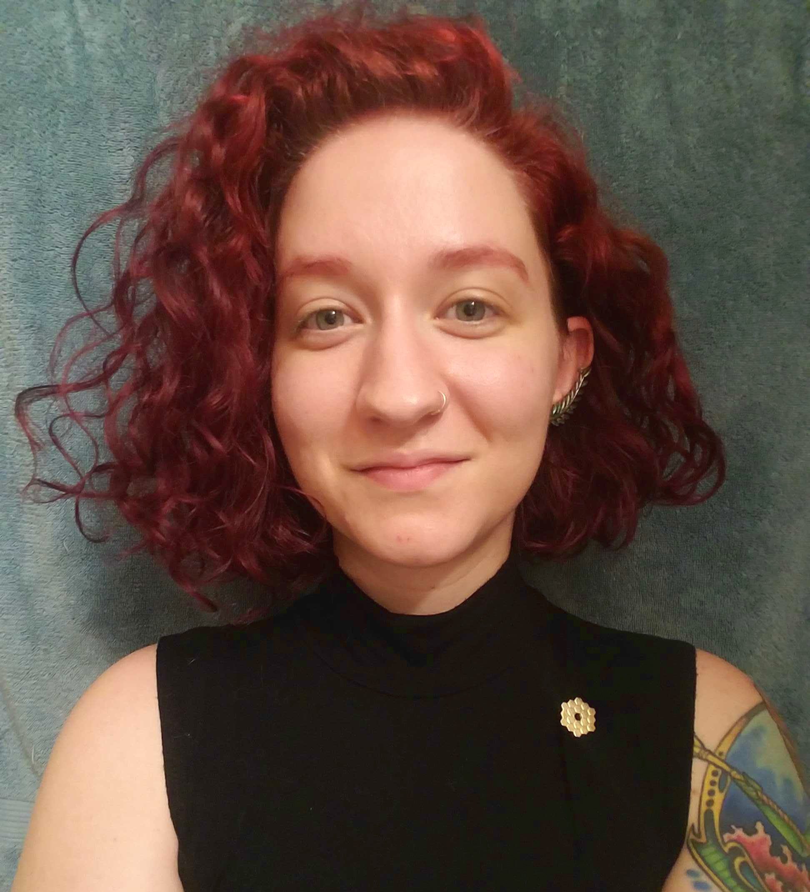

Jacqueline Antwi-Danso
she / her / hers
I'm an international student hailing from Ghana, West Africa. When I'm not staring at pixels, I spend time learning about interior decor, watching and discussing movies (I'm a huge Marvel fan), and co-organizing a podcast on intentional living and reachable mentorship (shameless plug -- it's called GrandHeights: StoryVox). I'm a big proponent of authentic, organic, and symbiotic relationships (be it professional, student-advisor, friendships, etc.), and I look forward to being able to help foster them in the MAGIC program.
I’m a 3rd year graduate student. In undergrad, I used H-alpha emission from high velocity clouds in the Galactic halo to constrain their distances and ionization properties. Currently, I use medium-band near-infrared photometry to improve the photometric redshift solutions of quiescent galaxies at z > 3. I also have expertise in spatially-variable point spread function homogenization. I'm generally interested in extragalactic astronomy and astrostatistics.
See her website!
Sarah Cantu
she / her / hers
I'm one of those first-gen, low-income, hispanic, single mom, blah blah blah kind of students. I'm currently living with a seven year old and a dog (both very active) in Northgate. I like to read, hang out & drink with friends (I'm fairly social), play music poorly, study Spanish, and tell people how to live their lives :)
Currently, I’m a 4th year grad student and I'm part of the galactic group working with Louie. I'm hoping to head into industry after grad school, so my current plan is to do a 5-year PhD with a heavy emphasis on computation and statistical analysis. I work with photometric data on objects like dwarf galaxies and globular clusters to constrain their nature and properties. In the past (i.e., undergrad), I've worked on projects dealing with asteroids and lightcurves, neutron stars and their pasta, and anything to do with python and/or breaking my computer's OS (I still do this one now).
See her website!
Jonathan Cohn
he / him / his
I'm originally from St. Louis, Missouri, but I lived in Dallas for a while before I came to College Station for grad school. I'm a classically trained (albeit rather out-of-practice) violinist, and I was a competitive figure skater for about 10 years. I love running around outside, reading books (NK Jemisin, Neil Gaiman), playing tabletop games (especially RPGs), and listening to all sorts of music.
I'm a 4th year grad student working with Jonelle Walsh, making dynamical models to estimate the mass of supermassive black holes based on molecular gas observations from ALMA. I am particularly interested in the co-evolution (or not) of supermassive black holes with their host galaxies. In the past, I've worked on modeling gravitational microlensing by stellar mass binary black holes in the Milky Way, as well as using SED-fitting to constrain the star formation histories of emission-line galaxies and star-forming galaxies at z~2.5-4.
See his website!
Yaswant Devarakonda
he / him / his
I've spent almost my entire life in Texas: first in the Houston suburbs and then in Austin for undergrad, so I know my way around the state and those two cities in particular. I've got a dog named Lulu, who is an adorable schnauzer mix. Outside of science, I like cooking, playing board games and tabletop RPGs such as D&D, playing video games, and reading. I'm also a big sports fan. I support the Texans in the NFL, the Dynamo in MLS, and Chelsea in the Premiere League. I try to be a good ally for minorities in STEM, and I support diversity, inclusivity, and intersectionality initiatives.
I’m a 2nd year grad student, and my current research is with Jonelle, trying to constrain the masses of supermassive black holes (SMBHs) in nearby galaxies. The hope is to get a wide sample of galaxies in order to better understand how galaxies and their SMBHs co-evolve. In general, I am interested in galaxy evolution and active galactic nuclei (AGNs). In my undergrad I studied high redshift, star-forming galaxies. I'm not entirely sure what I want to do in the future, but my current leaning is toward studying the role of AGN in suppressing star formation. I'm also interested and involved in astronomy outreach and education.
See his website!
Vince Estrada-Carpenter
he / him / his
I’m a first generation college student from a small border town in Texas. My interests outside of science include music (I play guitar), cooking, and long distance running. I also spent ~5 years in my twenties trying to get a music career going, and working all types of jobs, before going back to school.
I’m a 5th year grad student, and my main area of interest is galaxy evolution. Specifically, I use grism spectra (grism is a slitless and space-based form of spectroscopy) to constrain the assembly histories of massive galaxies in the early universe. My work involves a lot of sophisticated statistical methods and modeling.
See his website!
Peter Ferguson
he / him / his
I’m originally from Denver, Colorado and I went to undergrad at a small liberal arts school in Philadelphia, and then took 3 years off of school before starting here (I tried a bunch of non academic things and decided I really, REALLY liked astronomy). In College Station, I play ultimate frisbee, listen to lotsa music/watch too many music videos, and hangout/eat out/cook/play board games with friends!
I’m a 4th year grad student and I find myself interested in most areas of astronomy (AKA I’m very excitable), but for my PhD I am focusing on Milky Way science and a separate instrumentation project. Currently, I’m (1) working with Louie on using RR Lyrae to understand the spatial structure in the core of the Sagittarius dwarf galaxy, and (2) working with Darren/Luke on a calibration system to measure the relative transmission of a telescope + instrument. (In the past, I have also worked with Jen and Casey.) I am also interested in how we can use chemical abundances, kinematics, and positions of stars to understand the formation of our galaxy -- such as understanding R-Process sites from observations or measuring the velocities and metallicites of streams and ultra faint dwarf galaxies. I also enjoy thinking and talking about statistics, in particular spatial statistics and Bayesian hierarchical modeling.
See his website!

Taylor Hutchison
she / her / hers
I'm a Texan -- born and raised -- and haven't had the chance to leave the state yet. I have two cats that I obsess over and I care for a little forest of plants (which of course my cats treat as free-range salad). I love hiking, crafting, reading, playing cello, and hanging out and grabbing drinks with friends. I'm a big fan of combining >2 of those activities together as well, makes life more fun :)
I'm a 4th year grad student working with Casey, studying the properties of very high redshift (think z > 5) galaxies through near-infrared (NIR) spectroscopy and photoionization modeling. These galaxies are so far and faint that I have to use the 10-meter Keck I telescope paired with the super-sensitive MOSFIRE NIR spectrograph to see them. In the past (i.e., undergrad), I worked with photometry of nearby galaxies, studying their supermassive black holes. I'm really passionate and curious about galaxies in the early Universe, so I don't see myself moving from this subfield any time soon.
See her website!
Alex Riley
he / him / his
I'm originally from Cleveland, did my undergrad at UT Dallas, and specifically subscribe to counter-Texan culture (e.g. refusing to say "Howdy!" anywhere in this town). Outside of science, I spend WAAAAY too much time thinking about the current dumpster-fire of U.S. politics (sometimes international politics, too) and often use video games as a form of escapism (currently that means Skyrim or Pokemon Lets Go Eevee). I also play Dungeons and Dragons with several other astro grads and I am trying to get better at cooking.
I’m a 3rd year grad student, and I work on using cosmological simulations and measurements of Milky Way satellite galaxies to understand a little more about galaxy formation and dark matter. Specifically, I've used new Gaia proper motions to figure out that the Milky Way's stellar disk leaves an imprint on the orbits of Milky Way satellites. Now, I'm working on figuring out which of the bajillion new stellar streams are associated with the so-called Vast Polar Structure of the Milky Way (people argue over whether the Vast Polar Structure exists, and it might actually be a big problem for LCDM if it does).
See his website!